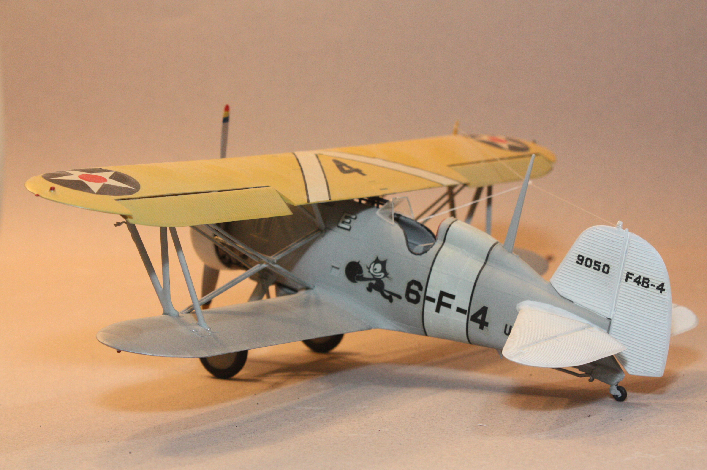
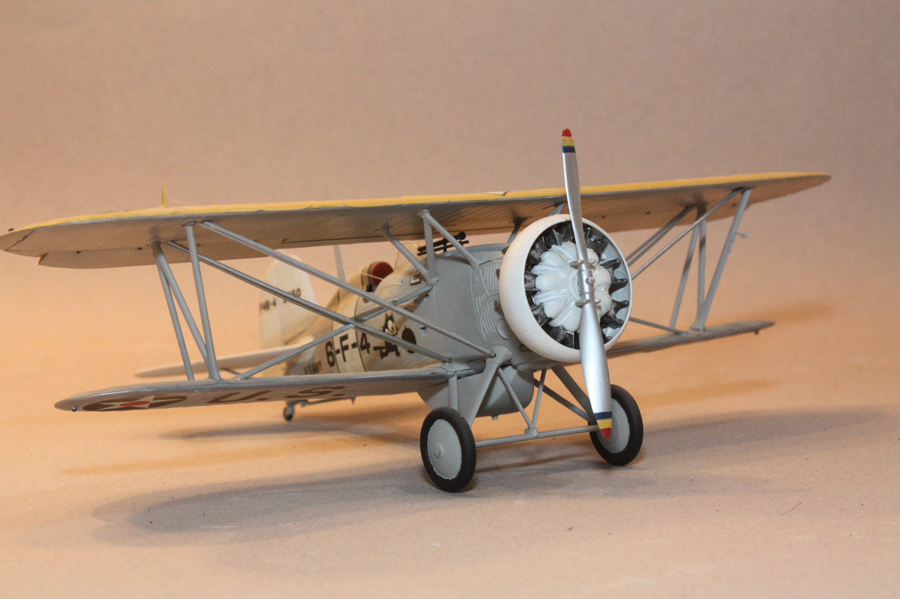

| Kit | Boeing F4B-4 | ||
|---|---|---|---|
| Manufacturer | Hasegawa | Scale | 1/32 |
| Kit Number | S7 | Price | $ |
| Subject Modeled | VF-6B, 1932 - 1936 U.S.S. Saratoga | ||
| Start Date | 2004 | ||
| Complete Date | 2004 | ||
This was not the first bi-plane I attempted to build after I returned to this hobby in 1995, but it was the first that I installed rigging between the wings. I used some wire intended floral design, which ended up being far too large for the scale. But I was able to rig the F4B-4 to my satisfaction at the time, although if I was to do this build again, I would certainly use the skills I have developed over the years since I built this one and rig it with EZ Line. I'd also likely weather-beat this bird.
 